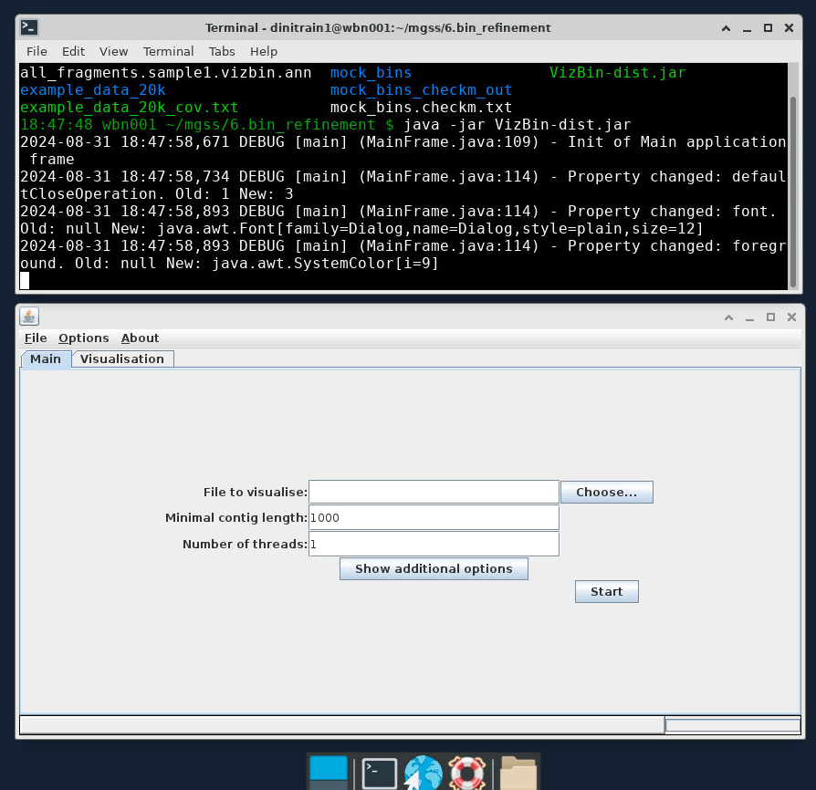

Manual bin refinement¶
Objectives
Preparing input files for VizBin¶
What is VizBin?
VizBin is a handy, GUI-based tool for creating ordinations of our binning data using the t-Distributed Stochastic Neighbor Embedding (t-SNE) algorithm to project high-dimensional data down into a 2D plot that preserves clustering information. There's a really good video on YouTube that explains how the algorithm works in high-level terms, but for our purposes you can really consider it as a similar approach to a PCA or NMDS.
On its own, VizBin takes a set of contigs and performs the t-SNE projection using compositional data. We can optionally provide it files that annotate contigs as belonging to particular bins and a file that adds coverage data to be considered when clustering. Unfortuantely, at this stage VizBin only allows a single coverage value per contig, which is not ideal. This is because VizBin only uses coverage as a means to modify the visualisation, not the ordination itself. It is possible to create your own t-SNE projection using multiple coverage values, however this is beyond the scope of today's exercise, and here we will be providing VizBin with coverage values for sample1 only.
The only required input file for VizBin is a single .fna file of the concatenated bins. An additional annotation file containing per-contig coverage values and bin IDs can also be provided. Colouring contigs by bin is a really effective way to spot areas that might need refinement.
In the interests of time today, the input files have been generated and are provided in the 6.bin_refinement/ folder:
all_fragments.fnais a concatenation of the bins of fragmented sub-contigs (fragmented to 20k)all_fragments.sample1.vizbin.annis the annotation file containing per-subcontig coverage, label (bin ID), and length values.
Contig fragments as input for VizBin
When running VizBin, it is often preferable to split long contigs into smaller pieces in order to increase the density of clustering in the t-SNE. The data we are working with today are based on our bins output by DAS_Tool in the last binning exercise, but have been further processed using the cut_up_fasta.py script that comes with the binning tool CONCOCT to cut long contigs into 20k fragments. When reviewing our VizBin plots and outputs, it is important to remember that here we are looking at the fragmented sub-contigs, rather than the full complete contigs.
For future reference, and for working with your own data, a step-by-step process for generating these files from the dereplicated bins generated by DAS_Tool has been provided as an Appendix.
For this section, we will be working within 6.bin_refinement/. Let's first have a quick look at the annotation file.
Navigate to working directory
Terminal output
This file is a comma-delimited table (csv file) that presents the information in the way that VizBin expects it. The order of rows in this file corresponds to the order of contigs in the concatenated FASTA file of our fragmented bins, all_fragments.fna.
Create a few variations of the .ann file with various columns removed, in order to examine the different outputs they can generate.
code
Symbolic links for easy access
By default, VizBin redirects to your home directory. To make it easy to come back to our working directory, we can make a symbolic link (aka shortcut) that points to here from home.
The flags mean:
-sdesignates it as a symbolic, instead of hard link-rindicates that paths are relative
Projecting a t-SNE and examining bin clusters¶
We can now use these files in VizBin to curate the contigs in our bins. We will load and view the data in a few different steps.
For this exercise, we will be using the Virtual Desktop on NeSI which allows us to use programmes with graphical user interfaces (GUI) within the NeSI computing environment.
Initiate the Virtual Desktop
- Click on File on the top left corner of the Jupyter Hub, and then select New Launcher. You can also click on the small + on the tabbed bar next to your terminal tab.
- Look for the Virtual Desktop icon and then click on centre of the icon.

- A new browser tab named 'TurboVNC:...' should appear and the Virtual Desktop should load.
- A successful instance of the Virtual Desktop should look like a desktop environment.

Running VizBin: local vs remote
Running VizBin remotely (e.g. within NeSI) can be slow with full data sets. Running a GUI (such as a program like VizBin) remotely can also require additional set up on some PCs. For day-to-day work, we recommend installing VizBin on your local machine and downloading the relevant input files (e.g. via scp ...) to run locally.
Initiate VizBin within the Virtual Desktop environment¶
-
In the Virtual Desktop, click on the terminal icon.

-
VizBinis a Java programme, therefore we will need to load the Java module for it to work. In the terminal, type the following to load the Java moduleCopy/paste in the Virtual Desktop
You will not be able to copy text from outside the Virtual Desktop and paste into the Virtual Desktop, in which case you will need to manually type these commands.
-
In the terminal, navigate to your directory where the Java file resides
Remember to replace
YOUR FOLDERwith your user name. -
Type the following into your Virtual Desktop terminal to initiate VizBin.
-
A successful launch of
VizBinwill look like the following:
{kind=link}
Load input files¶
Once VizBin is open, to get started, click the 'Choose...' button then navigate to the FASTA file all_fragments.fna.
VizBin directory
It is likely that when we click on the 'Choose...' button, the directory that is open will be our NeSI home directory. In that case, we can type in the input FASTA file in the 'File Name' bar: /nesi/nobackup/nesi02659/MGSS_U/<YOUR FOLDER>/6.bin_refinement/all_fragments.fna

Once this is imported, use the 'Show additional options' button to expose the advanced options, and add your 'bin only' .ann file into the 'Annotation file (optional)' field.

Executing the t-SNE¶
For now leave all other parameters as default. Click the 'Start' button to begin building the ordination. When it completes, you should see an output similar to the following:
Contigs coloured by bin¶

Additional annotations by length and coverage
If you input all_bins.sample1.vizbin.ann as your annotation file, you can see that the visualisation takes contig length (represented by point size) and coverage (represented by opacity) into account.
{kind=link}
Similar to other projection techniques, we interpret the closeness of points as a proxy for how similar they are, and because of our .ann file we can see which contigs belong to the same bin.
What do scaffolds look like?
In the example above, we used fragmented scaffolds as input files for VizBin. Take a look at what scaffolds look like with VizBin. Run the following code to generate input files for VizBin to visualise scaffolds.
code
Import the newly generated all_scaffolds.fna and all_scaffolds.vizbin.ann into VizBin to visualise it.
1. Picking and exporting sequences¶
We can use the interactive GUI to pick the boundaries of new bins, or to identify contigs which we do not believe should be retained in the data. Have a play around with the interface, testing out the following commands:
- Left-click and drag: Highlight an area of the ordination to zoom into
- Right-click, 'Zoom Out', 'Both Axes': Rest of the view
- Left-click several points: Create a selection of contigs to extract from the data
- Right-click, 'Selection', 'Export': Save the selected contigs into a new file
- Right-click, 'Selection', 'Clear selection': Clear the current selection
How you proceed in this stage is up to you. You can either select bins based on their boundary, and call these the refined bins. Alternatively, you could select outlier contigs and examine these in more detail to determine whether or not they were correctly placed into the bin. Which way you proceed really depends on how well the ordination resolves your bins, and it might be that both approaches are needed.
First, for each VizBin cluster, select the area around the cluster (via multiple left-clicks around the cluster), right-click, 'Selection', 'Export'. Save this output as cluster_1.fna.
Try this for one or two clusters. In practice, we would do this for each VizBin cluster, saving each as a new cluster_n.fna file.
Highlight a cluster to zoom into¶

Select the cluster to export¶
Left-click several points around the cluster
{kind=link}
Export the cluster¶
Right-click, 'Selection', 'Export'. Save the output as cluster_1.fna.
{kind=link}
2. Refining bins¶
VizBin is a general purpose tool for contig/scaffold/fragment visualisation. For this workshop, we're going to attempt to refine a few bins. Refinement can mean reducing contamination, improving completeness and/or splitting strains. Here, we will:
- Diagnose and visualise contig fragments
- Export clusters of contig fragments
- Check distribution of contig fragments across clusters
- Pull new contigs from concatenated bin files to form new bin clusters
- Check if genome metrics improve after manual refinement
For this exercise, we will be using data from the mock_fragments* files, mock_bins/ sub-directory, and additional genome metrics in mock_bins.checkm.txt. These files were generated using a different assembly (reads assembled using MEGAHIT) based on a modified sample 3 library, and then binned using MetaBAT2 and MaxBin as per previous lessons.
Inspect the genome metrics¶
Open up the file named mock_bins.checkm.txt. Take note of the metrics of each bin and consider what we might want to improve on.
Prepare output directory¶
We also need to prepare an output directory for the clusters that we export.
code
Load the files into VizBin¶
Return to the VizBin set-up dialogue in the Virtual Desktop. Select the following input files:
File to visualize: mock_fragments.fna
Annotation file: mock_fragments.sample3.vizbin.bin_only.ann
Your VizBin will look like this:
{kind=link}
Legends
When you have projected the tSNE, you can show the bin identity by right-clicking anywhere on the ordination and then click "Legend". This will give you a box that shows you which contig belongs to which bin.
Export clusters¶
Based on information you have on hand, make your selection around points that you think:
- Should form bins (name these sequences
cluster_n.bin_n.fa, wherebin_nreminds you which bin most of the fragments come from) - Are problematic fragments or fragments in doubt (name these sequences
contigs_n.fa)
You don't have to circle everything, just the ones you think need refining!
Export the sequences into the vb_export/ directory we made earlier.
Check distribution of contig fragments¶
We have provided you with a script that collects information from your exported fragments in order to check if you need to remove contigs from the aggregated mock_fragments.fna. We run this script like so:
vizbin_count_table.sh flags
| Flags | Description |
|---|---|
-i |
Input directory where FASTA files of drawn clusters are located |
-e |
File extension for drawn clusters |
-c |
File prefix for fragments that form new bins |
-s |
File prefix for problematic fragments or whose placements are doubtful. |
The script counts how problematic fragments are distributed across different clusters (based on the contig they came from). This helps us make an informed decision if removing a contig from a cluster would impact other clusters.
The outputs are:
vb_count_table.txt: A table of fragments and where other fragments of the same contig are also distributed in different clusters.vb_omit_contigs_tmp.txt: A list of contigs (not fragments) that were designated as problematic to be removed.
Remove problematic contigs¶
If your vb_count_table.txt has fragments of a contig that are spread across different clusters, you may need to reconsider removing that contig (i.e., there are non-zero counts in multiple cluster columns). This is because removing them may impact the composition of other clusters.
Otherwise, if problematic contig fragments do not form clusters, we can simply ignore them when reforming new bins. In this exercise, it is highly unlikely you will encounter contig fragments shared across multiple clusters. As such, we will simply ignore the problematic contigs from the concatenated contigs file.
Form new bins¶
Start by creating a new directory for refined bins.
We then create a file with the relevant contigs from our newly formed clusters.
code
Then, we use SeqKit to extract the required contigs.
code
Refining by omission
If you want to use the vb_omit_contigs_tmp.txt as the search pattern to omit contigs from the bins, you can do that following:
code
In the code above, we added a -v to the grep command to indicate invert matches.
Check your new bins!¶
Moment of truth! How did your decisions impact the genome metrics of the refined bins? Run your selections through CheckM and see how you did!
code
Human refinement vs automated binning¶
Did you do better than the automated binning software? Consider the following:
- Were the new clusters more complete?
- How much contamination was removed?
- Was there an substantial trade-off between completeness and contamination?
- How would you pre-process the sequences differently prior to manual refinement?
- Are there additional information that would have helped you in the decision-making process?
When your CheckM run finishes, check and compare how you did!